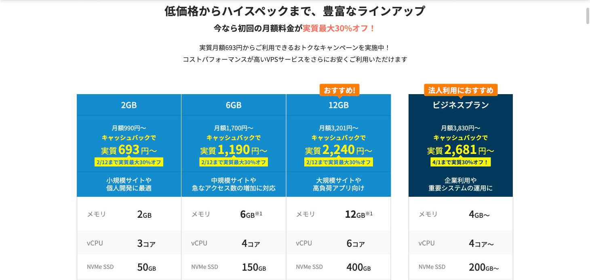
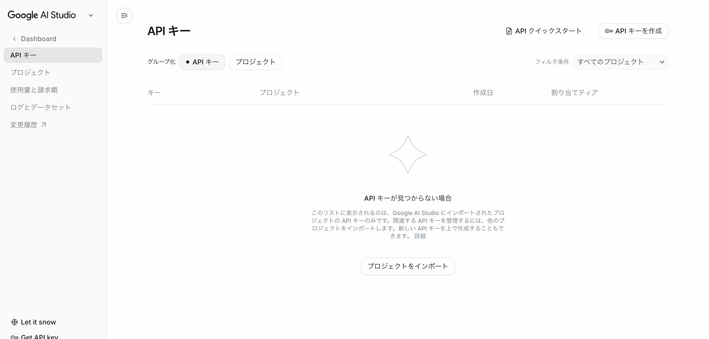
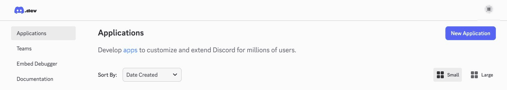
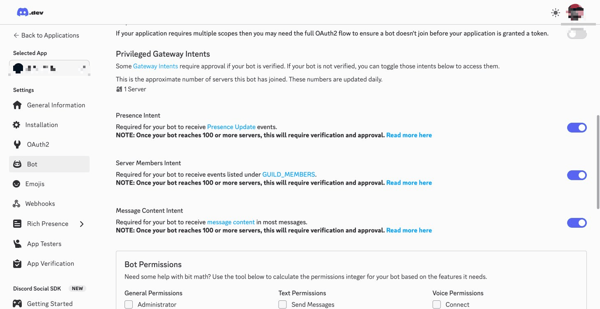
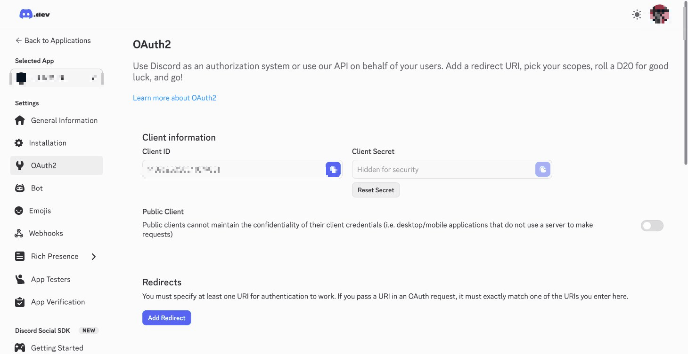

OpenClaw VPS セットアップガイド
VPS上でOpenClawを動かし、Discordから24時間AIボットを使えるようにする手順書
AI木曜会向け
XServer VPS 対応
Discord連携
2026-02-07
📱 あなたのスマホ / PC
▼ メンション (@Bot)
💬 Discord サーバー
▼ Bot Token
🖥 VPS (24時間稼働)
OpenClaw Gateway → AI モデル (Gemini等) + スキル
1. VPS契約
2. Node.js
3. OpenClaw
4. APIキー
5. Discord Bot
6. 接続
7. 常駐化
8. 確認
1VPSを借りる
推奨スペック
| 項目 | 最低 | 推奨 |
|---|---|---|
| RAM | 2GB | 4GB |
| CPU | 1コア | 2コア |
| OS | Ubuntu 22.04+ | Ubuntu 24.04 |
| ストレージ | 20GB | 40GB |
おすすめVPS

XServer VPS の料金プラン。2GBプラン（月額693円〜）で十分動作します。
| サービス | 月額目安 | 特徴 |
|---|---|---|
| XServer VPS | 830円〜 | 国内最速級・日本語パネル・おすすめ |
| さくらVPS | ~1,000円 | 国内・日本語サポート |
| ConoHa | ~1,000円 | 国内・時間課金可 |
| Hetzner | ~$4 | 安い・安定。海外サーバー |
| Oracle Cloud | 無料枠あり | ARM 4コア24GB RAMが無料 |
XServer VPS での契約・初期設定
XServer VPS 以外の方へ
他のVPSを使う場合は、SSH接続ができる状態まで進めたら「Step 1-4 SSH鍵の設定」へ飛んでください。
1-1. XServer VPS を契約
- XServer VPS にアクセス →「お申し込み」
- プランを選択: 2GBプラン（月830円〜）で十分
- サーバーのOS選択: Ubuntu 24.04 を選択
- アプリケーションテンプレートは「なし」でOK
- rootパスワードを設定 → 必ずメモ！
1-2. VPSパネルでサーバー情報を確認
- XServer VPSパネル にログイン
- 契約したサーバーをクリック → 詳細画面へ
- 以下の情報をメモ:
- IPアドレス （例:
162.43.xx.xx） - rootパスワード （契約時に設定したもの）
- IPアドレス （例:
1-3. SSH で接続
ターミナル（Mac: Terminal / Win: PowerShell or WSL）を開いて:
bash
ssh root@あなたのIPアドレス初回は Are you sure you want to continue connecting? と聞かれるので yes と入力。パスワードを入力してログインできればOK。
接続できない場合
XServer VPS パネル →「VPSパネル」→「コンソール」からブラウザ経由でもログインできます。SSHポート(22)がファイアウォールで許可されているか確認してください。
1-4. SSH鍵を設定する（推奨）
毎回パスワードを入力するのは面倒なので、SSH鍵認証を設定します。
ローカルPC（あなたのPC）で実行:
ローカルPC
# SSH鍵を生成（まだ鍵がない場合）
ssh-keygen -t ed25519 -f ~/.ssh/vps_openclaw -C "openclaw-vps"
# パスフレーズは空でもOK（Enter 2回）
# 公開鍵をVPSに送信
ssh-copy-id -i ~/.ssh/vps_openclaw.pub root@あなたのIPアドレスSSH接続を楽にする（~/.ssh/config に追記）:
~/.ssh/config
Host openclaw-vps
HostName あなたのIPアドレス
User root
IdentityFile ~/.ssh/vps_openclawこれで今後は ssh openclaw-vps だけで接続できます。
1-5. サーバーの初期設定
VPSにSSHで入った状態で:
VPS
# システムを最新に更新
apt update && apt upgrade -y
# 基本ツールをインストール
apt install -y git curl build-essential
# タイムゾーンを日本に設定
timedatectl set-timezone Asia/Tokyo
# 確認
date
# → JST で表示されればOK2Node.js をインストール
Node.js 22以上 が必要です。VPSにSSHで入って実行:
VPS
# Node.js 22 をインストール (nvm経由)
curl -o- https://raw.githubusercontent.com/nvm-sh/nvm/v0.40.0/install.sh | bash
source ~/.bashrc
nvm install 22
nvm use 22
# 確認
node -v # v22.x.x と表示されればOK
npm -v3OpenClaw をインストール
VPS
# ワンライナーインストール
curl -fsSL https://openclaw.ai/install.sh | bashインストール後、対話型セットアップウィザードが起動します。ここでは一旦 Ctrl+C でスキップしてOK。
VPS
# インストール確認
openclaw --version
# 例: 2026.x.x-x4AIモデルのAPIキーを設定
Gemini がおすすめ
Google の Gemini は無料枠があり、コストを気にせず始められます。
4-1. Google AI Studio でAPIキーを取得
- Google AI Studio にアクセス
- 左メニュー「Get API Key」をクリック
- 「Create API Key」でキーを生成
- キーをコピー（
AIza...で始まる文字列）

Google AI Studio の APIキー管理画面。「APIキーを作成」ボタンからキーを生成します。
4-2. OpenClaw にAPIキーを登録
VPS
# Google APIキーを設定
openclaw config set auth.profiles.google:default.credentials.apiKey "YOUR_API_KEY"
# プライマリモデルをGeminiに設定
openclaw config set agents.defaults.model.primary "google/gemini-2.5-flash"確認
VPS
openclaw config get agents.defaults.model.primary
# → google/gemini-2.5-flash他のモデルを使いたい場合
| プロバイダ | APIキー取得 | モデル名 |
|---|---|---|
| Anthropic | console.anthropic.com | anthropic/claude-sonnet-4-5 |
| OpenAI | platform.openai.com | openai/gpt-4.1 |
設定方法は同様: openclaw config set auth.profiles.{provider}:default.credentials.apiKey
5Discord Bot を作成
5-1. Discord Developer Portal でBotを作る
- Discord Developer Portal にアクセス
- 「New Application」→ 名前を入力（例:
MyOpenClaw）→ Create - 左メニュー「Bot」→「Add Bot」
- Bot Token をコピー（Reset Token → コピー）

Discord Developer Portal の Applications 画面。右上の「New Application」ボタンから作成します。
Bot Token は絶対に他人に見せないこと！
GitHubにpushしない、チャットに貼らない。漏洩したらすぐReset Tokenで再発行。
5-2. Bot の権限設定（Intents）
同じ Bot ページで Privileged Gateway Intents を有効化:
- Message Content Intent（必須！メッセージを読むために必要）
- Server Members Intent（推奨）
「Save Changes」を忘れずに。

Bot ページの Privileged Gateway Intents。Message Content Intent を必ず ON にします。
5-3. Bot をサーバーに招待
- 左メニュー「OAuth2」→「URL Generator」
- Scopes:
botapplications.commands
- Bot Permissions:
- View Channels
- Send Messages
- Read Message History
- Embed Links
- Attach Files
- Add Reactions
- 生成されたURLをコピー → ブラウザで開く → サーバーを選択 → 認証

OAuth2 URL Generator。bot と applications.commands にチェックを入れます。
6OpenClaw に Discord を接続
6-1. Bot Token を設定
VPS
openclaw config set channels.discord.enabled true
openclaw config set channels.discord.token "YOUR_DISCORD_BOT_TOKEN"6-2. サーバー（Guild）の設定
Discord の 開発者モード を有効にしてIDを取得:
- Discord設定 → アプリの設定 → 詳細設定 → 開発者モード ON
- サーバー名を右クリック →「サーバーIDをコピー」
- 自分のアイコンを右クリック →「ユーザーIDをコピー」
VPS
# サーバーIDとユーザーIDを設定
openclaw config set channels.discord.guilds.あなたのサーバーID.users '["あなたのユーザーID"]'
openclaw config set channels.discord.guilds.あなたのサーバーID.requireMention true
requireMention: true とは
@Bot名 でメンションした時だけ反応する設定。共有サーバーでは必須です。
6-3. ゲートウェイを起動
VPS
openclaw gateway --force724時間稼働の設定 (systemd)
VPSを再起動してもOpenClawが自動で立ち上がるようにします。
7-1. systemd サービスファイルを作成
VPS
mkdir -p ~/.config/systemd/user
cat > ~/.config/systemd/user/openclaw-gateway.service << 'EOF'
[Unit]
Description=OpenClaw Gateway
After=network-online.target
Wants=network-online.target
[Service]
Type=simple
ExecStart=/root/.nvm/versions/node/v22.*/bin/node /root/.npm-global/lib/node_modules/openclaw/dist/entry.js gateway
Restart=always
RestartSec=10
Environment=NODE_ENV=production
[Install]
WantedBy=default.target
EOF
パスを確認してください
which node と which openclaw で正しいパスを確認し、ExecStart を修正してください。
7-2. サービスを有効化・起動
VPS
# ユーザーサービスを有効化（ログインなしで自動起動）
loginctl enable-linger $(whoami)
# サービス登録・起動
systemctl --user daemon-reload
systemctl --user enable openclaw-gateway.service
systemctl --user start openclaw-gateway.service
# 状態確認
systemctl --user status openclaw-gateway.serviceactive (running) と表示されればOK。
7-3. ログの確認方法
VPS
journalctl --user -u openclaw-gateway.service -f8動作確認
VPS側の確認
VPS
# ヘルスチェック
openclaw doctor
# ステータス確認
openclaw status
# Discord チャンネルの状態確認
openclaw channels status --probeDiscord での確認
- Bot を招待したサーバーのチャンネルを開く
@BotName 今日の天気は？とメンション- Bot が返答すれば 成功！ 🎉
?よくあるトラブルと対処法
| 症状 | 原因 | 対処 |
|---|---|---|
| Bot がオンラインにならない | Gateway が起動していない | systemctl --user status openclaw-gateway.service |
| メンションしても無反応 | Message Content Intent が無効 | Developer Portal → Bot → Intents を確認 |
| "Used disallowed intents" | 必要な Intent が未有効 | Message Content Intent を ON → Gateway 再起動 |
| API エラー | APIキーが無効 or 残高不足 | openclaw config get auth.profiles |
| コマンドが見つからない | PATH が通っていない | source ~/.bashrc または nvm use 22 |
| 特定チャンネルで反応しない | Guild/Channel 設定が未追加 | openclaw config get channels.discord.guilds |
困ったときのコマンド集
VPS
# 全体診断
openclaw doctor
# Gateway 強制再起動
openclaw gateway --force
# ログをリアルタイムで見る
journalctl --user -u openclaw-gateway.service -f
# スキル一覧を確認
openclaw skills list!セキュリティ注意事項
絶対に守ること
Bot Token と APIキー は絶対に公開しない。GitHubにpush しない、チャットに貼らない。
- Gateway はローカルバインド推奨 — デフォルトの
127.0.0.1:18789のまま使う - ファイアウォール設定 — ポート18789を外部公開しない
requireMention: true— 共有サーバーでは必須
VPS
# UFWでSSHのみ許可する例
sudo ufw allow ssh
sudo ufw enable
# ポート18789は開けなくてOK（ローカルバインドなので）+便利な使い方
モデルを切り替える
VPS
# Gemini → Claude に切り替え
openclaw config set agents.defaults.model.primary "anthropic/claude-sonnet-4-5"
# Gateway 再起動
openclaw gateway --forceスキルを確認・テスト
VPS
# 使えるスキル一覧
openclaw skills list
# スキルの要件チェック
openclaw skills checkSSH トンネルでダッシュボードを見る
ローカルPC
# ローカルPCで実行
ssh -N -L 18789:127.0.0.1:18789 openclaw-vps
# ブラウザで http://127.0.0.1:18789/ を開く